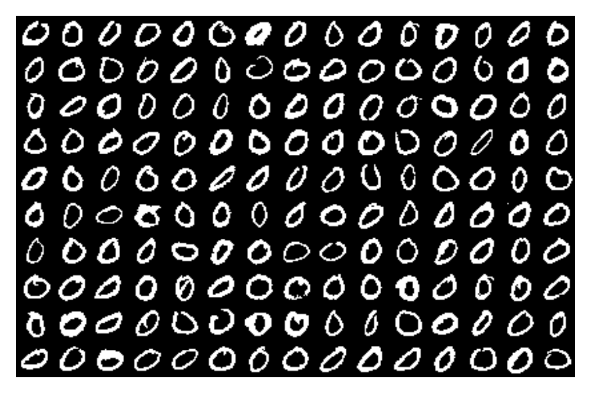
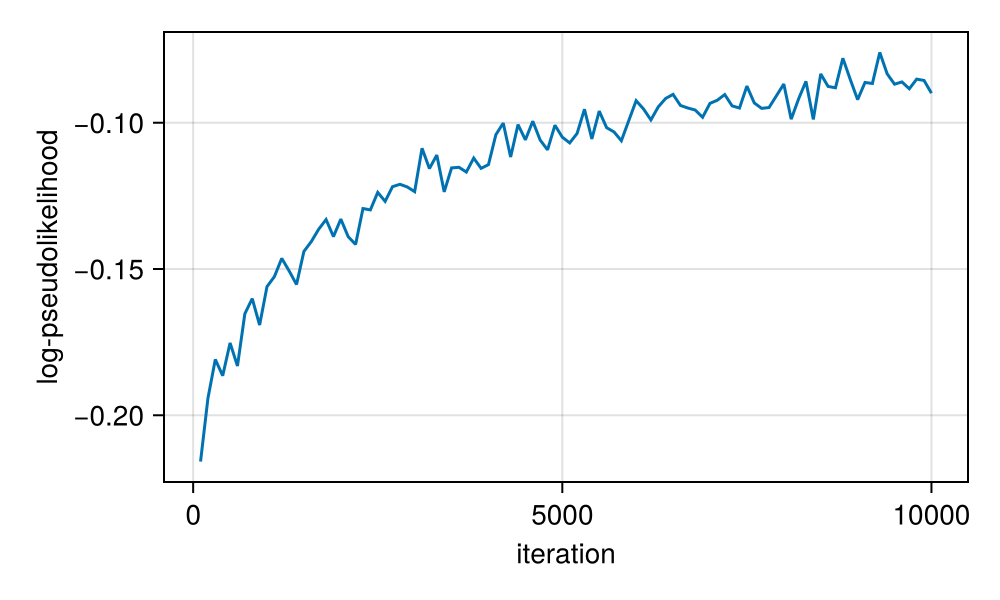
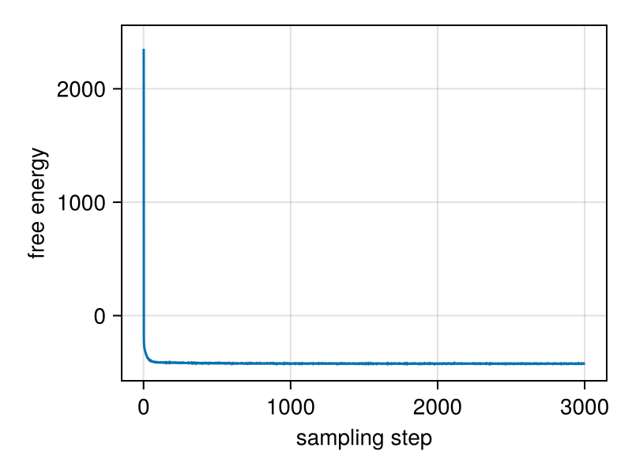
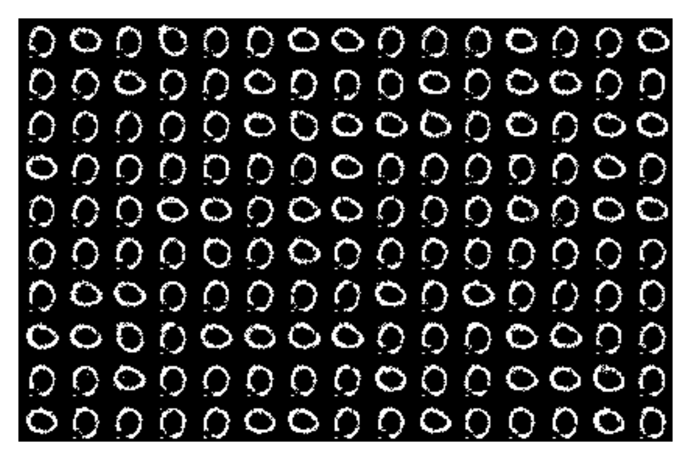

MNIST
This example demonstrates how to train a Binary RBM on MNIST handwritten digits and generate new samples from the learned distribution.
We begin by importing the required packages. We load MNIST via the MLDatasets.jl package.
import CairoMakie
import Makie
import MLDatasets
using Random: bitrand
using RestrictedBoltzmannMachines: BinaryRBM
using RestrictedBoltzmannMachines: free_energy
using RestrictedBoltzmannMachines: initialize!
using RestrictedBoltzmannMachines: log_pseudolikelihood
using RestrictedBoltzmannMachines: pcd!
using RestrictedBoltzmannMachines: sample_from_inputs
using RestrictedBoltzmannMachines: sample_v_from_v
using Statistics: mean
using Statistics: std
using Statistics: var
using ValueHistories: @trace
using ValueHistories: MVHistoryUseful function to plot grids of MNIST digits.
"""
imggrid(A)
Given a four dimensional tensor `A` of size `(width, height, ncols, nrows)`
containing `width x height` images in a grid of `nrows x ncols`, this returns
a matrix of size `(width * ncols, height * nrows)`, that can be plotted in a heatmap
to display all images.
"""
imggrid(A::AbstractArray{<:Any,4}) =
reshape(permutedims(A, (1,3,2,4)), size(A,1)*size(A,3), size(A,2)*size(A,4))Main.imggridLoading and preparing the data
We load the MNIST dataset and binarize it (pixels above 0.5 become 1, otherwise 0), since we will use an RBM with binary visible units. For faster training, we select only one digit class (zeros).
Float = Float32
train_x = MLDatasets.MNIST(split=:train)[:].features
train_y = MLDatasets.MNIST(split=:train)[:].targets
train_x = Array{Float}(train_x[:, :, train_y .== 0] .≥ 0.5)Let's visualize some random digits from the training set.
nrows, ncols = 10, 15
fig = Makie.Figure(resolution=(40ncols, 40nrows))
ax = Makie.Axis(fig[1,1], yreversed=true)
idx = rand(1:size(train_x,3), nrows * ncols) # random indices of digits
digits = reshape(train_x[:,:,idx], 28, 28, ncols, nrows)
Makie.image!(ax, imggrid(digits), colorrange=(1,0))
Makie.hidedecorations!(ax)
Makie.hidespines!(ax)
fig
Initializing the RBM
We create a BinaryRBM with 28×28 visible units (matching the image size) and 400 hidden units. Then we call initialize! to set the visible biases to match the mean activation of each pixel in the training data, and initialize the weights to small random values. This gives the RBM a reasonable starting point for training.
rbm = BinaryRBM(Float, (28,28), 400)
initialize!(rbm, train_x)Training with PCD
We train the RBM using Persistent Contrastive Divergence (PCD). PCD maintains a set of persistent Markov chains (fantasy particles) across training iterations, which provides a better estimate of the model distribution's gradient than standard CD.
We monitor training progress using the pseudolikelihood, a tractable approximation to the log-likelihood. The pseudolikelihood evaluates how well the model predicts each variable given all others, and is much cheaper to compute than the exact log-likelihood (which requires the intractable partition function).
Before training, the RBM assigns a poor pseudolikelihood to the data:
println("log(PL) = ", mean(@time log_pseudolikelihood(rbm, train_x))) 1.312675 seconds (3.28 M allocations: 189.280 MiB, 88.71% compilation time)
log(PL) = -0.24193507Now we train the RBM.
batchsize = 256
iters = 10000
history = MVHistory()
@time pcd!(
rbm, train_x; iters, batchsize,
callback = function(; iter, _...)
if iszero(iter % 100)
lpl = mean(log_pseudolikelihood(rbm, train_x))
@trace history iter lpl
end
end
)302.278567 seconds (28.01 M allocations: 203.205 GiB, 30.54% gc time, 4.82% compilation time)After training, the pseudolikelihood improves significantly, indicating that the model has learned the structure of the data.
fig = Makie.Figure(resolution=(500,300))
ax = Makie.Axis(fig[1,1], xlabel = "iteration", ylabel="log-pseudolikelihood")
Makie.lines!(ax, get(history, :lpl)...)
fig
Sampling from the trained RBM
We generate new digit images by running Gibbs sampling chains starting from random binary configurations. Each step of Gibbs sampling alternates between sampling hidden units given visible, and visible given hidden (sample_v_from_v does one full step).
We track the free energy during sampling to check that the chains have equilibrated (reached the model's stationary distribution). The free energy $F(\mathbf{v}) = -\log \sum_{\mathbf{h}} e^{-E(\mathbf{v}, \mathbf{h})}$ should stabilize once the chains reach equilibrium.
nsteps = 3000
fantasy_F = zeros(nrows*ncols, nsteps)
fantasy_x = bitrand(28,28,nrows*ncols)
fantasy_F[:,1] .= free_energy(rbm, fantasy_x)
@time for t in 2:nsteps
fantasy_x .= sample_v_from_v(rbm, fantasy_x)
fantasy_F[:,t] .= free_energy(rbm, fantasy_x)
end 18.613256 seconds (241.79 k allocations: 11.988 GiB, 6.36% gc time, 0.66% compilation time)The free energy decreases and stabilizes, indicating equilibration.
fig = Makie.Figure(resolution=(400,300))
ax = Makie.Axis(fig[1,1], xlabel="sampling step", ylabel="free energy")
fantasy_F_μ = vec(mean(fantasy_F; dims=1))
fantasy_F_σ = vec(std(fantasy_F; dims=1))
Makie.band!(ax, 1:nsteps, fantasy_F_μ - fantasy_F_σ/2, fantasy_F_μ + fantasy_F_σ/2)
Makie.lines!(ax, 1:nsteps, fantasy_F_μ)
fig
The sampled digits resemble the training data:
fig = Makie.Figure(resolution=(40ncols, 40nrows))
ax = Makie.Axis(fig[1,1], yreversed=true)
Makie.image!(ax, imggrid(reshape(fantasy_x, 28, 28, ncols, nrows)), colorrange=(1,0))
Makie.hidedecorations!(ax)
Makie.hidespines!(ax)
fig
This page was generated using Literate.jl.